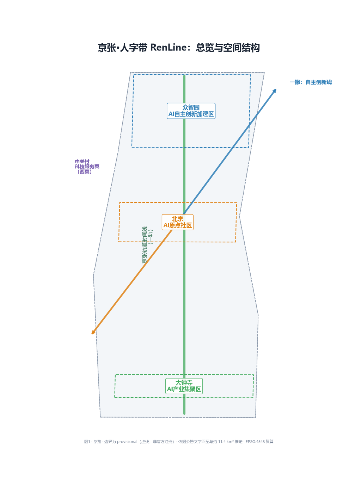
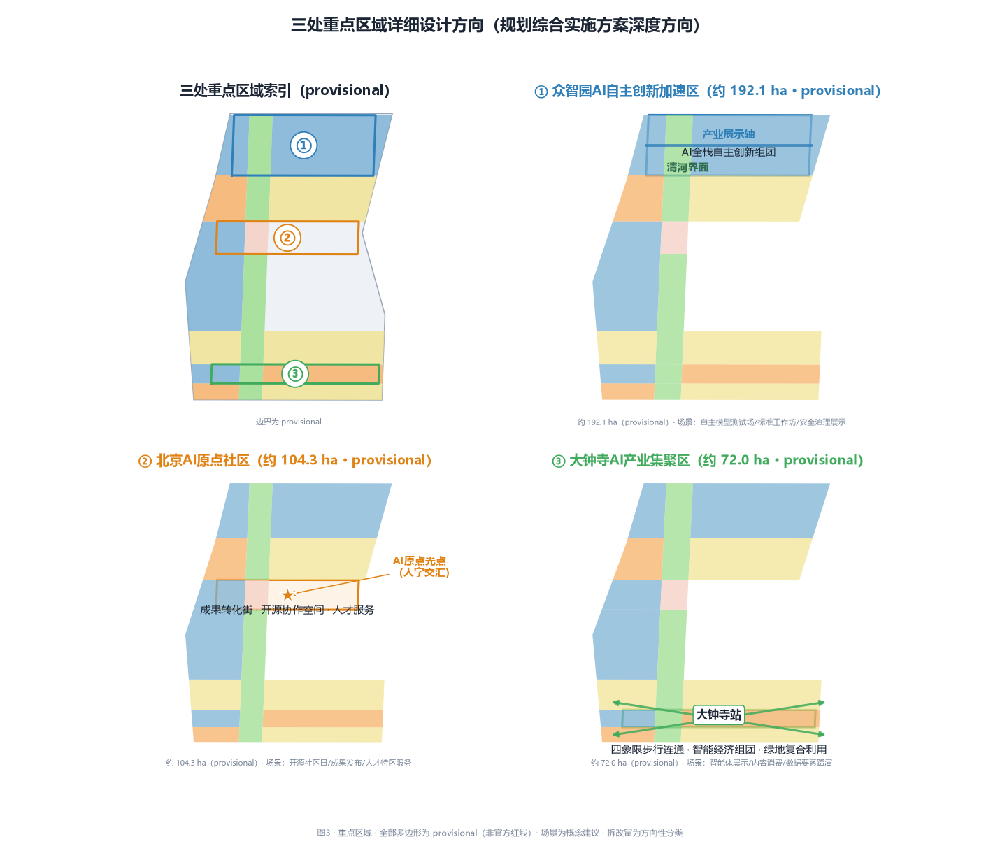
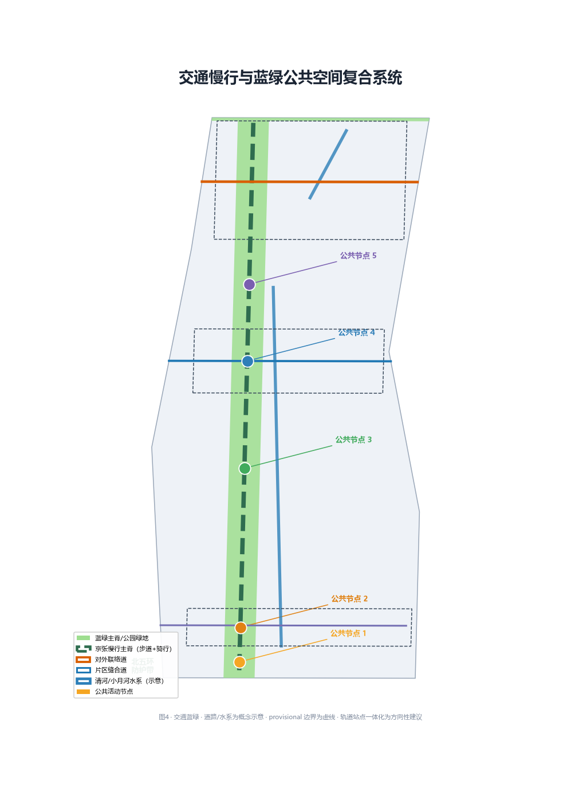

Overview Map
Zhongzhiyuan
AI Origin Community
Dazhongsi
Two Wings

Three-Level Scope
11,412,825.4 m²
Overall Design Area (EPSG:4548)
provisional · ≈ 11.4 km²
3
Key-Area Detailed Design Areas
all provisional
43.6 km²
Coordinated Research Area (announced)
industry and future city research
Key Areas
1,929,201.877 m²
Zhongzhiyuan AI Independent Innovation Acceleration Area
garden-style full-stack district (provisional)
1,043,236.909 m²
Beijing AI Origin Community
near-campus commercialization (provisional)
720,454.221 m²
Dazhongsi AI Industry Cluster
urban intelligent economy (provisional)

Land Use
3,384,158.5 m²
0802 Research (29.7%)
main AI industry space
2,768,342.2 m²
0701 Residential (24.3%)
existing + talent community
1,943,373.0 m²
0702 Community Service (17.0%)
community service nodes
1,060,409.4 m²
05 Commercial Services (9.3%)
intelligent consumption + tech services
711,540.9 m²
0804 Education (6.2%)
near-campus support
1,314,607.5 m²
1401 Park Green (11.5%)
Jing-Zhang blue-green spine
59,709.4 m²
1402 Protection Green (0.5%)
Fifth Ring buffer
170,711.6 m²
1403 Plaza (1.5%)
AI Origin plaza node

Mobility
≈ 12.9 km
Slow-mobility spine (conceptual centerline length)
walking + cycling composite, not redline
3
District connector roads
Dazhongsi S / Origin E-W / Zhongzhiyuan outward
5
Public activity nodes
S / Dazhongsi / mid / AI Origin / N

Blue-Green Public Space
1,545,028.5 m²
Green area
park + protection + plaza
13.54%
Green ratio (conceptual-indicative)
conceptual value, not official; official green ratio pending
995,421.2 m²
Public space area
Jing-Zhang activity spine 5 nodes
8.72%
Public space ratio (conceptual)
overlaps with green
Buildings
2,509,609.3 m²
Conceptual building footprint
28 conceptual massing blocks
4,095,709.4 m²
AI industry-space conceptual supply
research + commercial (35.9%)
711,540.9 m²
Talent education-research support
0804 education land
Renewal Projects
| No. | Project | Type | Phase |
|---|---|---|---|
| JZ-01 | Jing-Zhang slow-mobility gap stitching | Public space / transport | Near |
| JZ-02 | Zhongzhiyuan Qing River innovation front | Blue-green / showcase | Mid |
| JZ-03 | Origin near-campus commercialization street | Renewal / industry | Near |
| JZ-04 | Dazhongsi four-quadrant pedestrian connectivity | Station integration | Long |
| JZ-05 | AI public services and edge-computing nodes | New infrastructure | Mid |
| JZ-06 | Global AI week public route | Operations / brand | Near |
6
Renewal projects (conceptual)
near / mid / long
5,978,284.1 m²
Near-term (PHASE-001)
0–3 years
3,922,791.8 m²
Mid-term (PHASE-002)
3–6 years
1,511,756.4 m²
Long-term (PHASE-003)
6–10 years
AI Scenarios
10
AI scenario cards (3 validation)
conceptual recommendations only
5
User personas
R&D / startup / student / resident / international
Core Metrics

Task Coverage
The compliance matrix covers all 17 announcement tasks (1.3.1–1.5.3.3) and six agent tasks (agent.1–agent.6); see compliance_matrix.json.
Self-Check Status
Land-use topology PASS
full coverage, gap-free, overlap-free
Spatial recalculation PASS
core area and ratio match geometry (±1%)
Professional evidence PASS
5 standards / 15 depth / 27 metrics covered
Visual packaging PASS
offline, no remote, no iframe/API/trackers
All boundaries are provisional; full recalculation required when official polygons arrive.